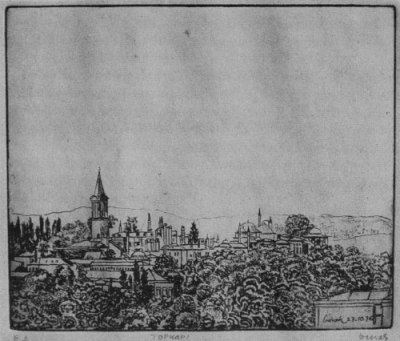

Bugünkü İstanbul benim çocukluğumdan ne kadar değişikse hiç şüphesiz Ahmet Rasim’in yaşlılık İstanbul’u da O’nun çocukluk İstanbul’undan o kadar değişikti; İstanbul’u çok iyi tanımış yazarların anlattığı büyük şehrin; bu eşsiz yıldızın parladığı daha doğrusu parlamadan sönmiye geçtiği zamanları bile göremedi bizim kuşaklar... Benim çocukluk anılarım işgal yılları, fırınların önünde hayal meyal hatırladığım kalabalıklar, Aksaray’da doğduğum mahalle, Sinekli Bakkal’daki küçük ev, tam karşıda kapısı yokuşun başındaki çeşmeye karşı açılan Gıyaseddin Bey’in güzelliğiyle ünlü bahçesi, Langa Caddesi’nden geçen işgal ordusu askerlerinin önlerinde mızıkaları geçişlerini tuhaf bir iç ezikliği içinde seyredişim gibi endişeli bir bekleyiş içinde geçti diyebilirim;..

1927 yılında Gazi’nin İstanbul’a ilk gelişini kutlamak için Firuzağa’daki büyük ahşap evin limana bakan odalarından birinin penceresine vapur görünür görünmez çekilmek üzere bir bayrak tertibatı bile yapmıştım; benim bayrağın çekilişini Gazi’nin (o zaman daha Atatürk değildi) muhakkak göreceğinden emindim... Baştanbaşa Rum, Ermeni taş yapıları, konaklarıyla dolu semtlerde apartman pek yoktu; daha çok bahçeli ahşap evler, konaklar vardı; ama bu ahşap evler, konaklar da artık eski yaşamlarını yitirmişler, oda oda kiraya verilenler bir zamanların görkemli yaşantısını unutup adeta bitkisel bir hayata girmişlerdi... Ama mahalleler bekçileri, delileri, fıkaraları, fukara babası zenginleri, haylazlarıyla daha sosyal birer toplum olmaktan çıkmamışlardı; aşağı yukarı herkes birbirlerini tanır, birbirini yardımına koşmaktan çekinmezdi; bizim evin bahçesindeki havuzun temizlenmesi, suyunun değiştirilmesi, kıpkırmızı balıkların leğenlere aktarılmasında bütün mahallenin çocuklarının, gençlerinin elbirliğiyle çalıştıklarını hatırlarım... İnsanların üst üste itişe kakışa yaşadıkları bir yer olmamıştı İstanbul daha o sıralar; sokaklarda sakallı bıyıklı koskoca dana gibi herifler gelenin geçenin kafasını gözünü düşünmeden ilerinin büyük futbol yıldızı olmak için böğüre böğüre plastik topa tekme sallamazlardı... Çocukların oyun alanları da kendiliğinden çocuk bahçeleri şeklinde oluşmuş bitmez tükenmez yangın yerleriydi... İstiklal Savaşı bitmiş babam İstanbul’a dönmüştü; bir gün bir arkadaşıyla elimden tutup okula yazdırmaya götürdüler beni, Beyoğlu’yla sürekli ilişkim böyle başladı.
İlk günü tamburun gümbürtüleri içinde hangi sınıfa gireceğimi şaşırıp okulun üst katında kaybolup aklım başımdan gittiydi, meğer kimselerin olmadığı yatakhane katına çıkmışım; gözyaşları içinde bitmez tükenmez koridorları dolaşıp bir merdivenden aşağı ininceye kadar sanki bir yüzyıl geçmişti benim için... Zilli Tevfik’e[35] kadar biz Galatasaray’da derslere tamburla girer, tamburla çıkardık, Ahmet Ağa köşesinde uyuklar, zamanı gelince gözlerini açar, yeleğinde asılı koskocaman köstekli saatine bakmaya bile lüzum görmeden saniyesi saniyesine o herkesin bildiği tadına doyulmaz temposuyla tamburunu çalardı... Kış günleri akşam paydosundan çıktığımızda lambalar yanmış olurdu. Çantalarımız koltuğumuzda evin yolunu tutmadan evvel şöyle bir iki tur atar, Sainte Pulchérie, Notre-Dame-de-Sionlu kızlarla gözgöze gelmiye çalışırdık... Kibar aile hanımlarının alış verişe çıktıkları günler Beyoğlu daha bir güzelleşirdi, o sıralar kadınlar yalnız başlarına sokağa çıkabiliyorlardı, caddeleri, sokakları süfelayı layuflihun sürüleri istila etmemişti, oysa bugün Çiçek Pasajı’ndan geçmek için bir erkeğin bile bir buzkıran çabası sarfetmesi gerekiyor... 1946 yılları Türkiye’nin yeni bir döneme geçme çabalarını getirdi; artık bir muhalefet partisi vardı ortada, Türkler artık bundan sonra yaşamak için kazanmak yerine kazanmak için yaşamayı prensip edinmiş tüketim toplumu kervanına doğru yönelmeye başlamışlardı. Osmanlının son çağlarında mertebani tabakta sunulan kokuşmuşluk bu kere Amerika hayranlığı, üsler, kalkınma sloganlarıyla süslenerek plastik tabakta sunulacaktı millete... Kısa zamanda yüzyıllarca süren bir yaşam düzeninin meydana koyduğu güzel ne varsa ortadan silinecek, Boğaziçi, insana huzur veren ahşap mahalleler ortadan kalkacak, her mahallede bir milyoner yaratma özlemi tıpkı Osmanlı İmparatorluğu’nun ağalar saltanatı’nda olduğu gibi bu sefer teneke kuşaklı pehlivanlarını kıyı yağması, arsa spekülasyonu gibi talanlara saldırtacak, karaborsa milyonerleri türeyecek, evlatları lüks spor arabalarında bütün bahçeli köşkleri ortadan yok eden Bağdat Caddesinde bir Amerikan homoseksüel kulübünün lanse ettiği James Dean’ın izi ölüm yarışlarına girişeceklerdi...
O sıralarda ekmek hâlâ vesikayla mıydı hatırlamıyorum, ama arkadaşlarla oturup içtiğimiz o yıllarda ekmek sıkıntısı çektiğimizi, hatta o kadar yolu tepip bir kaç dilim ekmek için eve kadar gidip Balıkpazarı’na döndüğümü biliyorum... Bir gün Sirkeci’den geçerken, işkembecide burnuma mis gibi ekmek kokusu geldi. Oradaki lokantada masalardan birine çöktüm, garson ekmek vermedi bana, karşıda oturan denizci, karnesinden bir parça koparıp verdiydi, o erin cömertliğini hâlâ unutamam.
1946 yılı belki de yıldızın parladığı son anlardı; İstanbul yavaş yavaş rahat yaşanan bir yer olmaktan çıkıyordu, şehre bir taşralı, köylü akını başlamıştı, hem de bu gelenler Cumhuriyetin onuncu yılında köyle kenti yaklaştırmak için getirilerek gelen cinsten değildi! Yalovalı bir karı kocayı anımsıyorum, kadının en hoşuna giden, kibrit çakılınca yanıveren havagazı ocağı olmuştu, gazın havagazı saatinden geldiğini öğrenince bir tane alıp köyüne götürmek istemişti... Şehre yeni başlıyan bu taşralı akını Anadolu’dan işsizlik, fakirlik, harbin getirdiği sıkıntılardan kopup gelmiş bir kalabalıktı; bugünkü gibi istila ve işgal eder gibi değil, ayaklarının ucuna basa basa havayı koklıyarak giriyordu bu kalabalık, hiçbir zaman burjuvazisi olmıyan, olmamış olan bu toplumda bu olay kırk yaşında kızamık çıkarmaya benziyordu, ilerinin burjuvazisi olacak bu toplum tabana yerleşmiye başlıyor, köprü başlarını tutuyordu... Seçimlerin yaklaştığı yıldı, Halk Partisi’nin sinirlerinin adamakıllı gergin olduğu sıralardı; Çiçek Pasajı’nda Haçik’in birasını yudumlarken Orhan Veli, Sait Faik ve daha başka yazar çizerlerle tanışmıştım, bazen Pasaj’da bazen de Cumhuriyet’te buluşurduk; ara sıra paysage dönüşü resim takımlarım elimde gittiğim oluyordu; Sait Faik palete tablet diyordu. Bir akşam Haçik’te Orhan Veli bana Galata Köprüsü adlı şiirini ithaf etmek istediğini söylemişti, bu pek büyük şerefi hak edecek birisi olmadığımı söyleyip kabul etmedimdi, Orhan Veli her zamanki nezaketiyle bir şey söylemedi, belki de içinden kırıldı, insanın sevgiye her zaman gönlü açık olmalı, şimdi pişmanım doğrusu... Bir gün Sait Faik bana hikâyelerini, kitaplarını okuyup okumadığımı sormuştu, bir iki hikâyesinden başka bir şey okumadığımı söyleyince katıla katıla güldü, ha işte demişti, doğru dürüst dost olunacak bir adam bulduk nihayet! Çok büyüğümüz olduğundan yanında ben oldukça çekingendim, ayrıca ne yapacağı da belli olmuyordu bazen, bir akşam Orhan Veli, ben, Sait Faik daha bir kaç kişi Opera Sineması’nın girişindeki Paskal dediğimiz yerde içiyorduk, tezgâhta yüksek iskemlelerine tünemiş bir kaç kişi vardı, elektrikler sönmüş masalara mumlar dikilmişti; koskoca bira fıçısı geldi o sıra, garsonlar oflıya poflıya döşemede açılan kapaktan indirdiler fıçıyı güçlükle, o sıra Sait Faik yerinden kalkıp tezgâhta yemeğini yiyen birisine bir tos vurmasıyla adamcağız teker meker iskemlesinden deliğe yuvarlandı kayboldu; ne yapacağımızı şaşırmıştık, adam meğerse aşağıda uğraşan garsonların arasına düşmüş, ötesi berisi morarmış çizilmiş; güç halle çıktı geldi, güç halle yatıştırıldı; barıştılar.. Sonra sorduk Sait Faik’e, adamı tanımıyormuş bile, makarna yiyişi sinirine dokunmuş: – Ulan insan öyle mi makarna yer, çatalına dolar da yer, yemesini bilmiyorsan yeme bari! diyip çıktıydı işin içinden gözleri çakmak çakmak...
1947 yılının kışı da çok şiddetli olduydu, o yıl Cemal Nadir malta hummasından gitti. Annemi de o yılın 15 Ağustos’u bir perşembe günü sabaha karşı kaybettim kanserden... Her akşam aşağı yukarı buluşuyorduk, bir gün Sait Faik nedense merak etmiş benim de bir şeyler yazıp yazmadığımı sordu, yazdığımı söyledim:
– Getir de okuyalım dedi, yarın Cumhuriyet’te..
Yarın Cumhuriyet’te Sait Faik, Orhan Veli, Suavi Koçer, Sait’in Saffet dediği (safiyet anlamında) Sarsak Orhan, ben, soyadını bilmediğim Kel Fehmi dedikleri arkadaş, benim Galatasaray’dan sınıf arkadaşım Hüseyin oturduk; yenilip içilirken Sait bana yazıyı getirip getirmediğimi sordu; çıkarıp okumaya başladım; “Makam Otomobili “adında epice tatsız tuzsuz acemice bir şeydi hatırımda kaldığına göre; büyük yazarın karşısında heyecandan dudaklarım titreye titreye okuyordum, gözleri yarı kapalı dinleyen Orhan Veli yazıda geçen sinameki sözcüğünün hemen belki otuz kırk kadarının benzerini sıralayıvermişti arka arkaya; gürültü arasında sesimi duyurabilmek için epi yüksek okuyordum, birden fötr şapkalı, pardüsülü üç kişi peyda oldu, doğru bizim masaya geldiler, hüviyet soruyorlardı, askerlik yoklamam filan tamam değildi o sıra, belki de askerliğini yapmıyan bir bendim içlerinde; dudağım uçukladı korkudan. Âdeta askerlik işi başımın üstünde sallanan Demokles’in kılıcıydı benim için! İşin kötüsü Sait Faik adamakıllı kızmıştı bu hüviyet aramasına, çıkıştı adamlara.
– Ne yapacaksınız hüviyetimizi?
– Orası bize ait, siz çıkarın hüviyetinizi!
– Mecbur muyuz?
– Evet mecbursunuz.
– Hüviyet soruyorsanız benim adım Sait Faik, bu da Orhan Veli, bunlar da arkadaşlar... – Biz tanımayız sizi, dedi adamlar, bize hüviyetiniz lazım, gösterin hüviyetlerinizi! Sait Faik patladı bu sefer: – Siz Sait Faik’le Orhan Veli’yi tanımadıktan sonra biz de sizi tanımıyoruz, dedi kestirdi attı. Artık ok yaydan çıkmıştı: – Buyrun merkeze öyleyse, diye çıkıştı adamlardan biri, her halde rütbece en yüksek olanıydı, ilave etti “oraya gidelim hele görürüz”.. Bütün hiddetleri Sait’in üstünde toplanmıştı sanki... Polisin sinirlerinin üstelik de gergin olduğu şu sıralarda bu aksiliğe ne lüzum vardı diye düşünüyorum, kendimi de sorumlu görüyorum ayrıca, elimdeki kâğıttan bir şeyler okumam getirdi bu işleri başımıza diye düşünüyorum, her halde birisi gitti ihbar etti belki de, bunlara da vatan kurtaran aslan rolü oynamak çıktı... Hep beraber kalktık, Orhan Veli yarı uyku halinde, Suavi Koçer ne olup bittiğini pek anlayamamış gibiydi, kafile halinde gidiyorduk; karakol Balo Sokağı’nın karşısında bugün sıhhi banyonun bulunduğu Otel İmparator’un bulunduğu yerdeydi. Siz burada bekleyin, dedi Sait Faik; ben komiserle konuşmaya yalnız gideceğim... Aradan epice bir zaman geçti, yukarda neler olup bittiğini merak etmeye başlamıştık, ama Sait bize gelmememizi sıkı sıkıya tembih etmişti, ne kadar bekledik bilmiyorum ama bana pek uzun geldiydi. Birden ilerdeki binanın kapısında Sait Faik, komiserler bizi oraya getirenlerden birini gördük, komiser epice yıldızlı, ayaklarında getrleri, belinde palaskası, tabancasıyla babacan bir adamdı; orada durmuşlar gülüşüyor şakalaşıyorlardı, sonra öpüşerek ayrıldılar, suçlu olarak girdiği yerden komiserin kapılara kadar inerek ağırladığı bir misafir olarak çıkan Sait’i ölümden dönen birisini karşılar gibi karşıladık; sonra anlattı bize, ismini söyleyince komiser yer gösterip oturtmuş, meğer Sait Faik’in meraklı bir okuyucusuymuş, ötekilere durumu anlattırmış, üstünde durmamış bile, kahveler çaylar içilmiş, edebiyat, şiir, hikâyeden konuşulmuş bir süre, sonra bizim gördüğümüz gibi dost olmuşlar, öpüşüp koklaşıp ayrılmışlar.. Gidelim bir yere içelim diye tutturdu Sait Faik, Orman’a gidelim oturalım biraz diyor, herkes yorgunluktan bitkin durumda, Orhan Veli gözleri yarı kapalı hiç sesini çıkarmıyor, bir kaç kişi itiraz ettik, Orman bu saatte kapalıdır, evlerimize gidelim diyoruz ama Sait Faik’e dinletemiyorduk, Orman’ın sahibini, garsonlarını tanıdığını söylüyordu, Balo Sokağı’ndan çıkıp karşıya geçtik, Orman’da siyah perdeler indirilmiş ama içersi aydınlık, aradan bir kaç kişinin içtiği görülüyordu... Sait anahtarlarını mı yoksa yüzüğünü mü sert sert cama vurdu, bir kaç kere perde kalktı; garson yok der gibi eliyle işaret edip kapattı; Gördün mü, dedi Kel Fehmi Sait’e, kapanmış işte almıyorlar! Ben açtırırım, dedi Sait yeniden, bu sefer hem eliyle hem de ayağıyla vurmaya başladı cama; perde yeniden kalktı ve bir cemm-i gafir ellerini kaldırıp yok işareti yapıp yerlerine döndüler; o zaman garip bir şey oldu Sait Faik zaten soğuktan kaldırdığı pardesüsünün yakalarını biraz daha kaldırdı, şapkasını başına şöyle bir bastırdı ve cama bir tos vurup duvar geçen gibi öte tarafa geçti büyük bir şangırtı içinde; arkasından bir turna katarı gibi geçip kendimizi dükkânın içinde şaşkınlıktan, hiddetten donmuş kalmış bir kalabalığın ortasında bulduk bekçi düdükleri feryatlar arasında; bu sefer patron, garsonlar, bekçi, bir kaç şahit müşteri, biz yine o geldiğimiz yoldan ters yüzüne karakolun yolunu tuttuk, Sait Faik yine bize orada beklememizi söyledi, tıpkı birinci seferinde olduğu gibi epeyce sonra yine Komiserle, Sait, patron bekçi, şahitler kapıda belirdiler, tekrar Komiserler öpüştüler, ötekilerle de el sıkışıp bizim tarafa yöneldi... Hikâye meraklısı olmasaydı komiser bu sefer hepimiz her halde o gece karakolda sabahlardık, komiserin hatırı için adam da zararı ziyanı sineye çekti muhakkak! 12 Marttan sonra polis hüviyet tesbiti yaparken deri ceketiyle Sabahattin Eyüboğlu’nu karşısında görünce: – Gel bakalım babalık demiş, senin adın ne? Sabahattin Eyüboğlu söylemiş adını, “mesleğin nedir? demiş! Şoför müsün?” Sait Faik’i kapılara kadar indiren komiseri düşünüyorum, bir zamanlar asma katında piyano bile çalınan sabahlara kadar açık Nisuaz’ı, birer küçük akademya olan Petrograd, Leningrad, Moskova kahvelerini, bir kaç kuruşla oturulabilen Viyana’yı, yemekleri de birası kadar nefis Fişer’i, akşamları sinemaya gitmek için çıkmış, vitrinleri seyreden aileleri, insanın çekildiği köşesinde istediği kadar okuyup yazabildiği, kimsenin kimseye karışmadığı o yerleri düşünüyorum... Geçenlerde her akşam gidip kitabımı dergimi okuduğum lokanta-meyhanede baktım hesaba ekmek elliydi, şimdi bir lira mı oldu diye sordum garsona... “Yeseydin hoca dedi, elli kuruşa ekmek nerde var şimdi; zaten herkesi rahatsız ediyorsun!” Ne yapıyorum, dedim rahatsız edip!” “Kitap gazete filan okuyorsun herkes rahatsız oluyor, demin altı kişi gelmişti (masa dört kişilik halbuki) oturmadılar çıktılar senin yüzünden!”
Eşşek herif, demek geçti içimden. Zaman oldu buraya elli altmış kişi geldiği oldu benim yüzümden ne çabuk unuttun! İnsan değilsin sen dedim suratına karşı bağıra bağıra, Allah belanı versin, adımımı atmam artık... Beyoğlu artık (bütün İstanbul başka türlü mü sanki) büyük bir şehrin ana caddesi olmaktan çıkmış, alçaklığın adiliğin, yozluğun göbek attığı bir genelev sokağı olmuş sanki. Buraya ister kardeşi, ister karısı ya da sevgilisiyle çıkan her erkeğin başı belaya girer, her kadın orta malıdır sanki bir it sürüsünün, hele hele aklına uyup da yalnız çıktıysa genelev kadınının ta kendisidir, saldırıya uğrasa şikâyet edemez, çünkü gittiği yerde daha fena saldıracaklardır belki de... Ne oldu diyorum bu şehre bu Beyoğlu’na böyle, ben ki son yıllarına yetiştim, eski devrin şiirini, anlatıla anlatıla bitirilemiyen güzelliğini görmedim ben oysa... Ne oldu? Fena kokulu bir rüzgâr mı esti, yoksa gün mü karardı birdenbire aydınlığın içinden! Ne oldu?
7 Nisan 1976 / Cağaloğlu